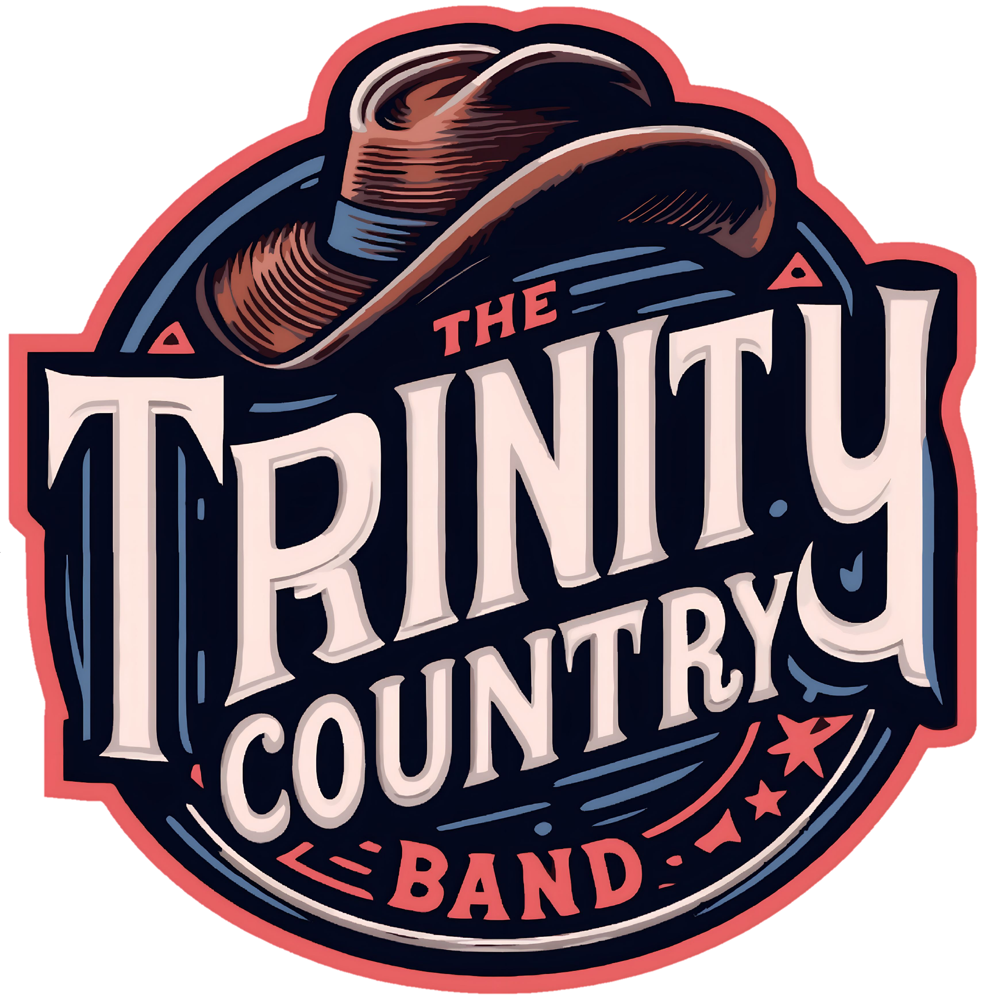

Stage Experience
Festivais, programações públicas e grandes eventos. Presença de palco, repertório cantável e clima de festival.

A The Trinity Country Band é uma banda da Serra Gaúcha, no Rio Grande do Sul, dedicada ao Country norte-americano, Country Rock e Southern Rock. O repertório cruza clássicos cantáveis, guitarras marcantes e a energia de um show feito para acontecer diante do público.
A Trinity se apresenta em festivais, eventos municipais, encontros de motociclistas e veículos antigos, pubs e eventos particulares. Cada palco pede uma entrega própria; o som continua sendo Trinity.
Festivais, programações públicas e grandes eventos. Presença de palco, repertório cantável e clima de festival.
Encontros de motociclistas e eventos de estrada. Country Rock e Southern Rock com energia de ponta a ponta.
Pubs e casas estruturadas. Duas horas de Country, bar cheio e público perto do palco.
Casamentos e eventos particulares. Repertório e produção alinhados com a ocasião, sem perder a identidade da banda.
Da festa da cidade ao palco perto do público: uma seleção de apresentações e registros da Trinity, com links para a programação ou para o material publicado.
Outra data da Trinity no espaço, divulgada no calendário turístico da cidade.
Ver calendário ↗A Trinity integrou a programação musical da festa gastronômica da Serra Gaúcha.
Ver programação ↗O Bar Bacon anunciou a noite com a Trinity em sua programação.
Ver anúncio ↗Show no Bar Bacon registrado na agenda da Secretaria Municipal de Turismo.
Ver agenda ↗A banda compartilhou o registro da noite de inauguração do espaço.
Ver registro ↗Apresentação anunciada pela Trinity para a tarde de sábado.
Ver anúncio ↗O nome da Trinity entrou no line-up divulgado pela Secretaria Municipal de Cultura.
Ver divulgação ↗Um registro da banda ao vivo, tocando “A New Life”, do The Marshall Tucker Band.
Assistir ao vídeo ↗Envie cidade, data, horário, público estimado e estrutura disponível. Para divulgação, o material oficial está na aba Material; informações de palco estão em Palco.
Consultar disponibilidade